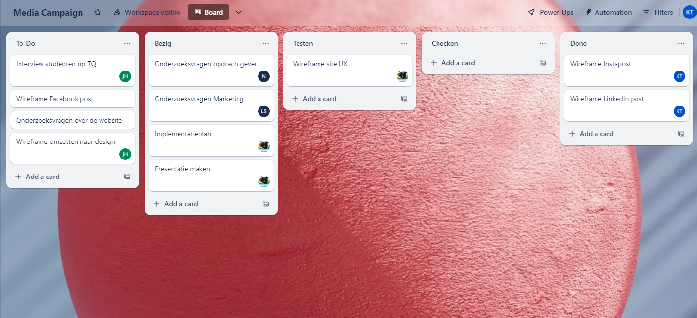
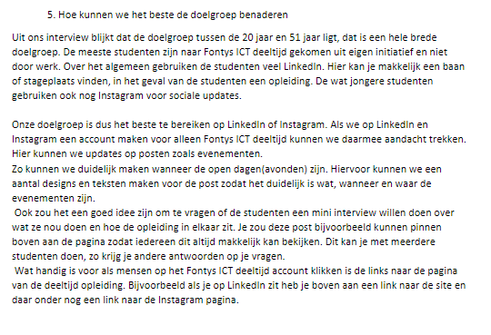
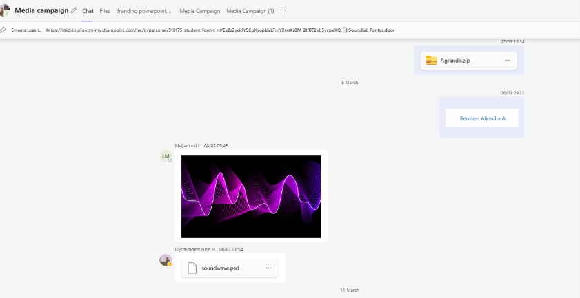

For professional standard our project group made a small trello board. I added all the tasks and assigned mine for me. This way I could see what everyone was doing and how they were progressing in the project. And if I saw someone wasn't finishing their tasks I would ask if I could either help or if they forgot to move their card.
 For the project we had to interview students so we could research how to best approach the students, or how to get more students for our part-time education. After the interview I made an overview of the best way to get more students to join our part-time education.
For keeping in touch with the project team, we found Teams to be the most effective tool. It allowed us to share our work easily and collaborate on documents like Word or PowerPoint. Plus, having the Trello board integrated into Teams as an additional tab in the chat made it even more convenient. This setup made communication smoother and helped us stay on top of our tasks without missing a beat.
